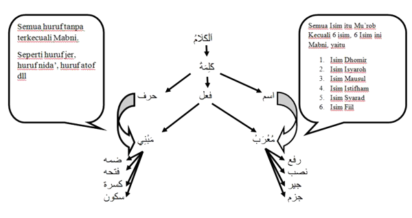

Mu'rob dan Mabni
Didalam nahwu, harokat terahir suatu kalimah sangatlah penting karena menentukan suatu kedudukan dan mempengarui makna kalam yang diinginkan.
Mu’rob adalah perubahan diahir kalimah sebab beda-bedanya Amil yang masuk.
Mabni adalah tetapnya harokat ahir suatu kalimah.
Contohnya kalimah isim الله kadang dii’robi اللهُ diahir kalimah dii’robi dhomah dan kadang اللهَ diahir kalimah dii’robi fathah dan kadang dii’robi اللهِ dihir kalimah dii’robi kasroh.
Contoh lain kalimahهُوَ selalu dii’robiهُوَ dengan dii’robi fathah diahir kalimahnya, tidak pernah dii’robi هُوُ dengan dii’robi dhomah diahir kalimah atau هُوِ .
Kalimah yang diahir hurufnya bisa dii’robi dhomah atau fathah atau kasroh atau sukun inilah yang dimaksud dengan kalimah itu mu’rob, seperti kalimah الله sedangkan kebalikannya kalimah yang selalu dii’robi sama tanpa bisa dirubah-rubah inilah yang dimaksud bahwa kalimah itu mabni, seperti kalimah هُوَ .
Hubungan antara كَلِمَةْ ( اسم, فعل,حروف ) dan مُعْرَبْ / مَبْنِيadalah bahwa semua kalimah huruf adalah mabni tanpa terkecuali, dan semua kalimah isim itu mu’rob kecuali 6 isim , sedangkan kalimah fiil, hanya fiil mudhor’ yang mu’rob, untuk fiil madhi, fiil amr dan fiil nahi semuanya mabni.
اِعْرَابْ adalah bentuk perubahan dari mu’rob.
I’rob dibagi menjadi 4, yaitu:
1. رَفَعْ dengan tanda asli (ضَمَّةْ)
2. نَصَبْ dengan tanda asli (فَتْحَةْ)
3. جِيرْ dengan tanda asli (كَسْرَةْ)
4. جَزم dengan tanda asli (سُكُونْ)
Sedangkan mabni dibagi menjadi 4 juga yaitu
مَبْنِي ضَمَّةْ | مَبْنِي فَتْحَةْ | مَبْنِي كَسْرَةْ | مَبْنِي سُكُونْ
Bila dilihat dari kalimah huruf yang sudah kita ketahui yaitu huruf jer maka bisa dikatakan kalimah yang mabni dhomah adalah مُنْذُ , yang mabni fathah adalah كَ , yang mabni kasroh adalahبِ , dan yang mabni sukun adalah مِنْ dll.
Sedangkan semua isim itu mu’rob kecuali 6 isim, 6 isim ini juga mabni, yaitu :
1. اسم ضَمِيرْ [Kata Ganti] Contohnya: هُوَ (dia).
2. اسم إِشَارَة [Kata Tunjuk] Contohnya: هَذَا (ini).
3. اسم مَوْصُولْ [Kata Sambung] Contohnya: اَلَّذِى (yang).
4. اسم إِسْتِفْهَامْ [Kata Tanya] Contohnya: مَنْ (siapakah).
5. اسم شَرَطْ [Syarad] Contohnya: اِذَا (jika).
6. اسم فعل [Isim yang bermakna Fiil] Contohnya: أمِيْنَ (kabulkanlah!)
Jadi dari ke 6 isim tersebut harokat terahirnya akan selalu dii’robi sama seperti diatas tidak bisa berubah-ubah. Dan selain ke 6 isim diatas berarti termasuk isim mu’rob. Ke 6 isim ini tidak mempunyai tanda isim pada umumnya.

Tabel hubungan kalam, kalimah dan mu’rob&mabni